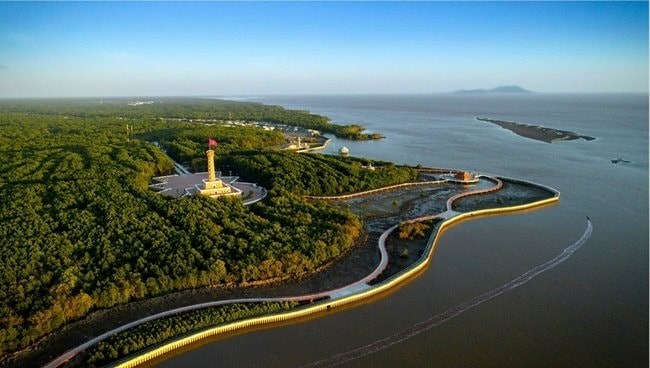

ĐẤT MŨIMŨIĐIỂM CUỐI
TỔ QUỐC
TỔ QUỐC
Rừng ngập mặn Cà Mau · Di sản xanh
TỪ MIỀN ĐẤT BA MẶT GIÁP BIỂN
Một miền đất,
trăm vị thương nhớ.
Nơi rừng đước ôm lấy dòng sông, thiên nhiên đã ưu ái ban tặng Cà Mau những sản vật không nơi nào có được.
Vị mặn mòi của biển, phù sa bồi đắp từ sông nước và những cánh rừng tràm U Minh trù phú làm nên hương vị mộc mạc mà đậm sâu. Trong từng mùa nước, mùa tôm, mùa mật là bao công sức và kinh nghiệm được người dân gìn giữ qua nhiều thế hệ.
Hương Vị Đất Mũi kết nối bạn với những người làm nghề lâu năm, để mỗi món ngon trao đi đều nguyên vẹn cái tình của quê hương — từ con cua Năm Căn chắc thịt đến hũ ba khía Rạch Gốc đậm đà.
3Mặt giáp biển
100%Vị ngon bản địa
Tận tâmTừ người Cà Mau
THIÊN NHIÊN BỒI ĐẮP VỊ NGON
Rừng xanh, biển mặn,
tình người đậm sâu.
Tìm hiểu những món quà quê được làm nên từ hệ sinh thái đặc trưng và bàn tay cần mẫn của người Cà Mau.
Khám phá đặc sản